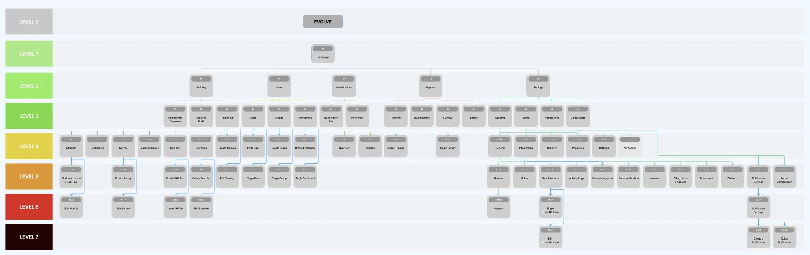
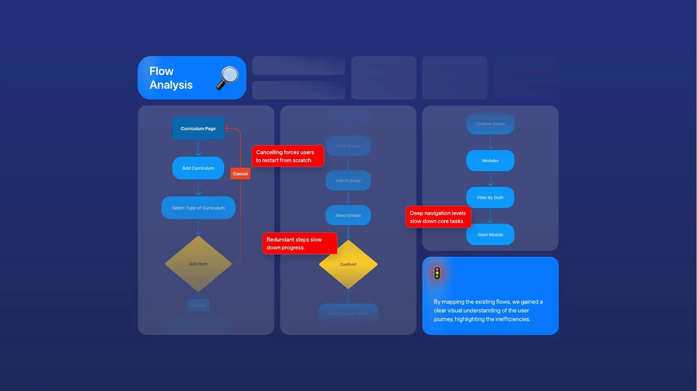
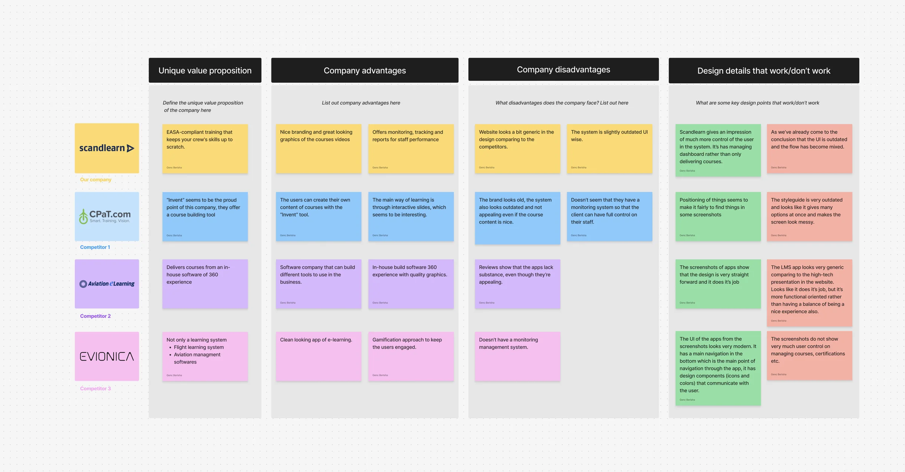
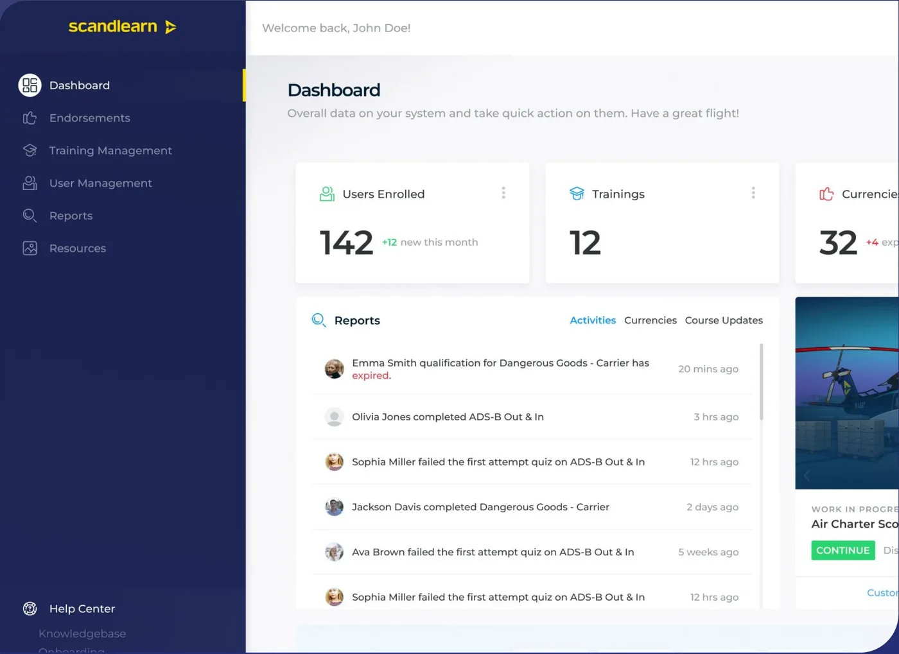
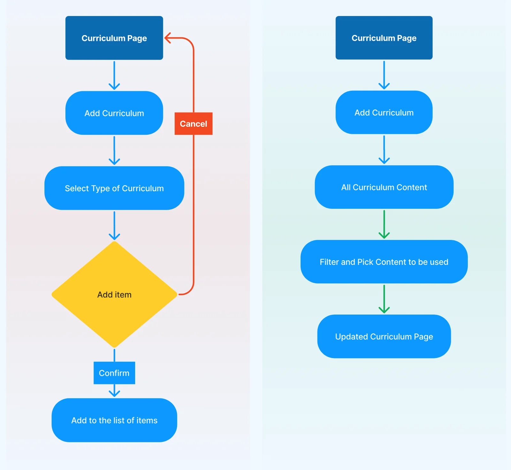
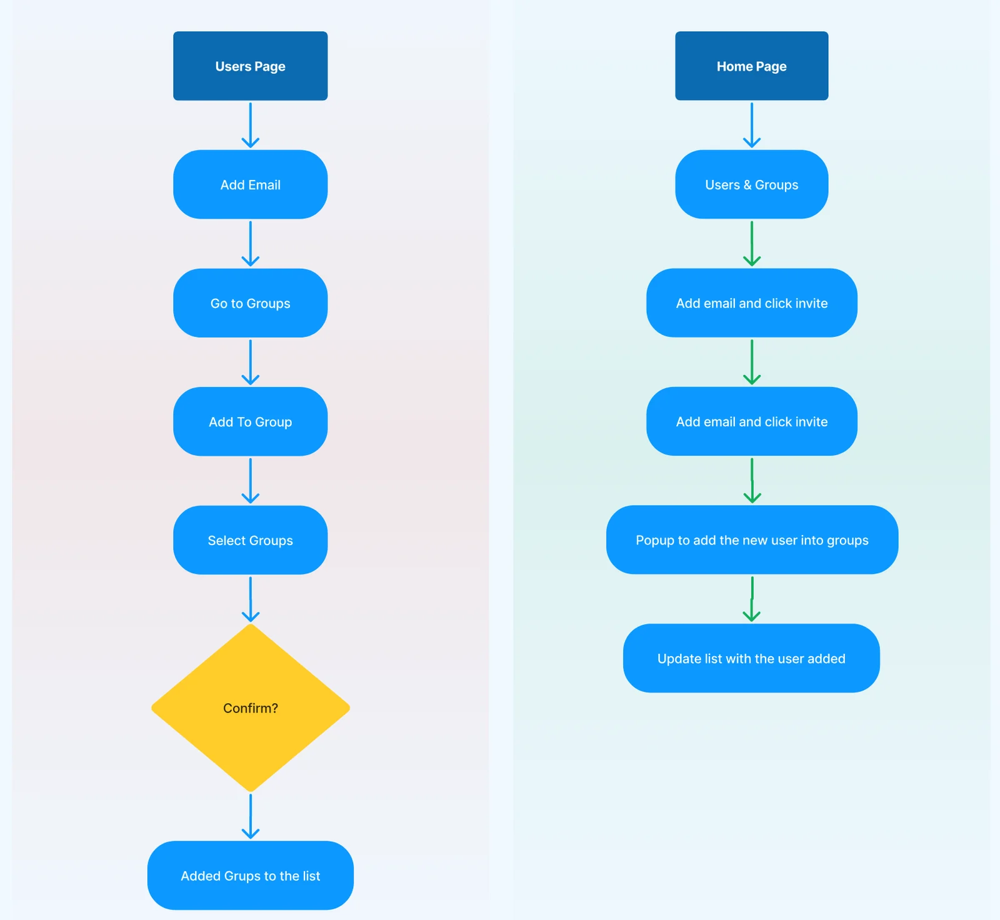
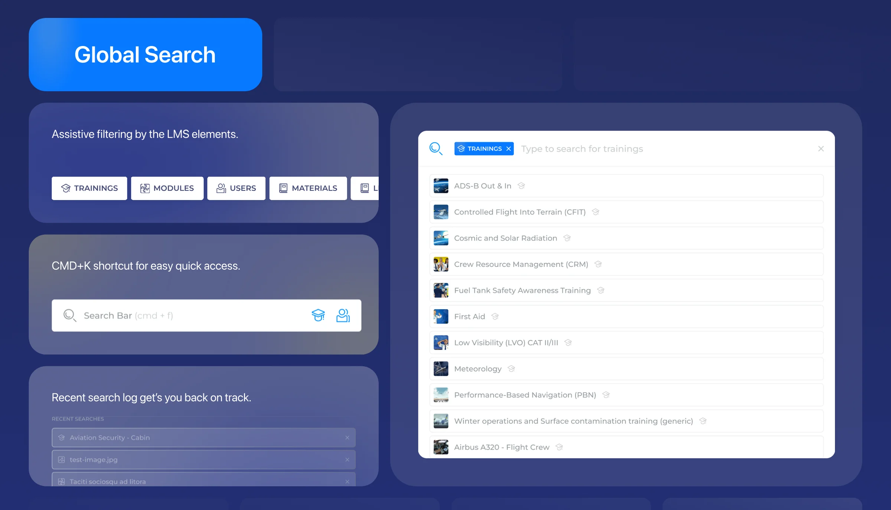
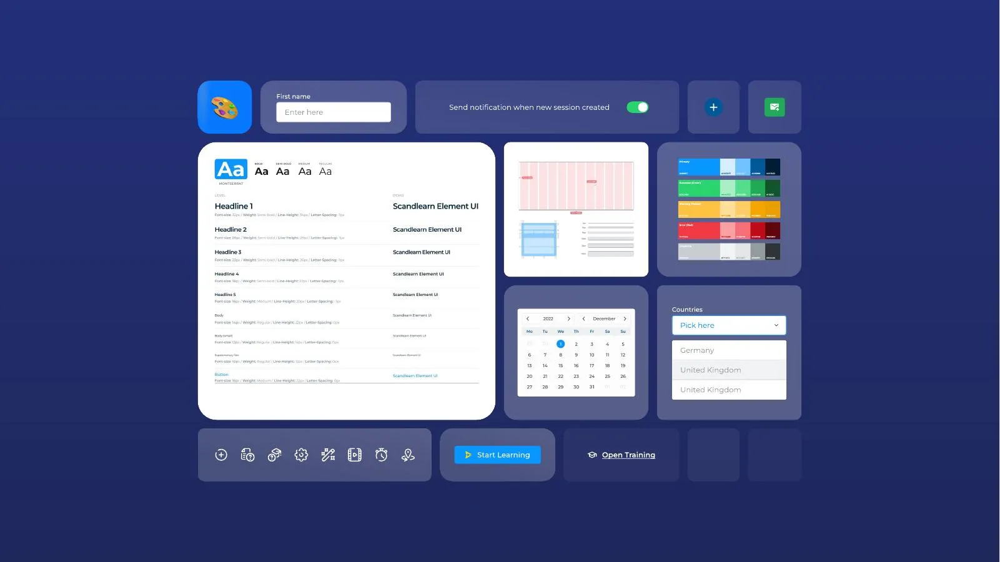

My part
I was the only designer. I ran the survey and interviews, compared five competitors, wrote personas, mapped the old flows and sitemap, rebuilt the navigation, and designed the admin experience, search, course structure and component library. The Scandlearn team owned the product and built it.
The problem
21steps to publish one training
Support was stretched thin because users couldn't find features. The 2020 handbook sent to me on day one needed 21 numbered steps just to publish a training. In interviews and a survey, people called it "a frustrating maze".
Screens of the old platform, from that handbook.

BeforeOld version

BeforeOld version
Mapping it showed why. Some pages sat seven levels deep, cancelling meant starting over, and steps repeated.


What users and rivals told me
In the survey, most people named the system itself as the most frustrating part, ahead of courses, navigation or control.
I also compared Scandlearn with CPaT, Aviation eLearning, Evionica, Leon and Webmanuals. The rivals looked modern but gave admins little control over courses and staff. Scandlearn had that control but buried it under an outdated, crowded interface. So the brief became: keep the control, lose the maze.



Navigation by role
Admins, authors, instructors and learners need different things. Starting from that role map, I rebuilt the sitemap into seven main sections, each with a few groups, so every role sees its own pages first. Global search, a left panel and tabs with a tree view tie them together.


Fewer steps, no starting over
I redrew the flows people used most. Picking curriculum content now happens in one list with filters, so cancelling no longer throws your picks away. Inviting a user straight into a group takes three fewer steps.


Search as the main way around
More menus don't fix findability. One search covers trainings, modules, users and materials, with type filters, a ⌘K shortcut and recent searches.

A tree view and one component library
An expandable tree shows where you are in a deep course. A shared library of type, colours, inputs and tables with row actions kept 400+ screens consistent.

Outcome
- 400+ screens handed over to development.
- The client kept me on for 4 more months for a new website, video player and CBTA (competency-based training) feature.
I left before the build finished, so I have no usage numbers.
What I'd do differently
We had a baseline, the survey, but no plan to measure again. Next time I'd agree before handover to rerun it after launch.